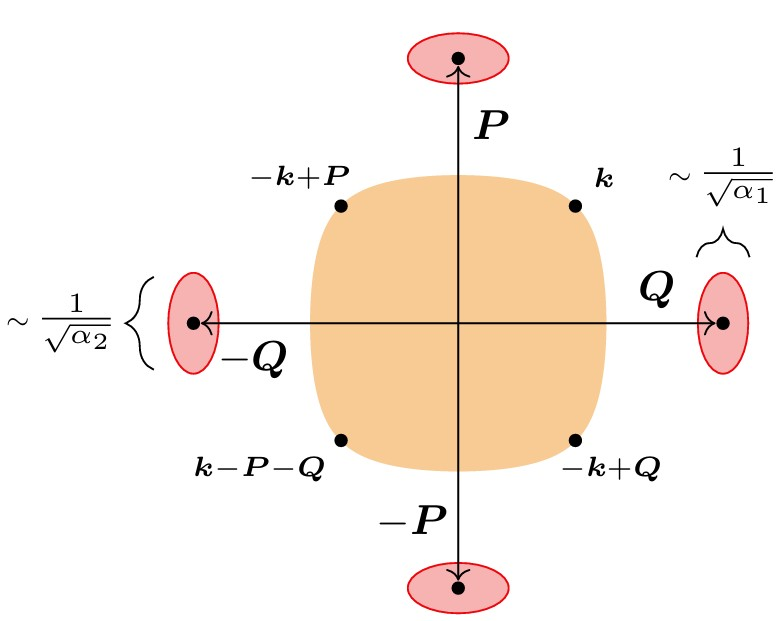

Orbital magnetic susceptibility and de Haas–van Alphen effect of a flat band from quantum geometry
E. Huecker, M. Ye, and Y. Wang, Orbital magnetic susceptibility and de Haas–van Alphen effect of a flat band from quantum geometry, arxiv:2610.12193.

- A band that is exactly flat at zero magnetic field has zero velocity, a divergent effective mass, and no Fermi surface, so the standard theory of orbital magnetism does not apply.
- We show that the magnetic field generates an effective dispersion. In the expansion organized by the Moyal algebra of the noncommutative kinetic momenta, the band energy acquires a first-order shift set by the orbital moment of the Bloch state, and a second-order shift whose gauge-invariant coefficient we obtain in closed form.
- These two functions, together with the Berry curvature, fix the entire orbital response. The susceptibility is purely geometric, and for a generic isolated flat band it reproduces the established gauge-invariant response formula.
- With the chemical potential pinned to the flat band, the emergent contour becomes an emergent Fermi surface, and bosonizing excitations in its vicinity yields a modified Lifshitz–Kosevich formula with level spacing quadratic in B.
- The phase shift of the oscillations is given jointly by the Berry phase around the emergent Fermi surface and X. When the band is narrow rather than exactly flat, the oscillation frequency crosses over, with a parameter-free profile, from the zero-field Fermi-surface area to the area of the M=0contour.
- We verify our analytical findings numerically by exactly diagonalizing a flattened Chern lattice model.